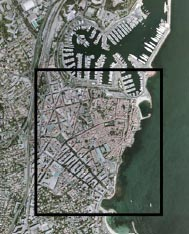
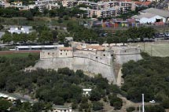
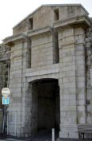
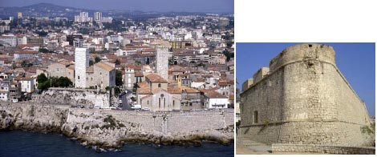

Les sites historiques - Les villes frontières
ANTIBES
Les fortifications de la ville sont renforcées au début du XVIe siècle, puis vers 1556, des travaux sur les remparts sont entrepris. Une nouvelle enceinte est imaginée, parsemée de bastions et percée de cinq portes : - porte Saint André
- porte de la Foux
- porte Marine
- porte de la Place
- porte Saint-Sébastien
Henri de Mandons, sieur de St Rémy, dirige les opérations. Il prend la direction de la construction d’une tour de garde sur la presqu’île au nord du centre ancien. En 1567, l’ouvrage est complété par quatre bastions du nom de leur orientation : Antibes, France, Nice et Corse et sera achevé vers 1585-88 et deviendra le «chastel fort d’Antibol», puis le «Fort Quarré». Une vingtaine de canons et une garnison y sont installées.

Monument historique
Classé le 07.11.1906, Classé le 20.08.1913
Fort Carré
Ce type d’ouvrage apparut en 1530, en Italie. A cette époque, les stratèges donnaient une importance accrue au rôle de l’artillerie. Construit entre 1563 et 1595, il fut amélioré au XVIIe siècle, par Vauban et Niquet qui y réalisèrent des travaux (optimisation de la casemate ; réhaussement du parapet ; création d’un chemin de ronde...). Vauban avait prévu de complèter la fortifi cation avec un ouvrage constitué de deux demi-bastions d’angle reliés par une courtine avec une demi-lune mais ils ne seront jamais terminés. La face du fort tournée vers Antibes était celle de l’entrée de l’ouvrage. La courtine était munie d’un système de mâchicoulis qui permettait les tirs plongeant rapprochés. Au centre de l’ouvrage, la Tour Saint Laurent d’un diamètre de 25 mètres a des murs de 4 mètres d’épaisseur. Les 4 bastions ont des murs de 2.5 mètres d’épaisseur. Les logements pour la garnison pouvaient accueillir jusqu’à 200 hommes. Grâce à diverses possibilités d’aménagement, le Fort Carré pouvait résister à 1 mois de blocus. On comptait 1 canon pour 1000 hommes. Le Fort d’Antibes avec ses 21 pièces possibles représentait une puissance défensive exceptionnelle.
Cet ensemble architectural et paysager possède une place prépondérante dans le paysage antibois. Il présente un socle végétal à forte valeur écologique et paysagère (caractéristique des fronts de mer méditerranéens) mais aussi un ensemble architectural de grande valeur liée à sa fonction militaire.

La Porte Marine
Jusqu’en 1929, la porte Marine, primitivement fermée par un pontlevis, est la seule ouverture donnant sur le port. Constituée de pierres de taille, elle possède encore toutes ses spécifi cités : les entailles permettant par des chaînes, d’abaisser ou de remonter le pont-levis, une herse constituée de bois et de fer et sa charpente en bois sont encore visibles. En 1929, une seconde ouverture, en demi-cercle, est pratiquée vis à vis du débouché de la rue Thuret sur le boulevard d’Aguillon. Ces travaux s’accompagnent de la disparition du lavoir des Casemates et du léger déplacement de la fontaine, construits en 1786.

A partir de 1680 Vauban, alors commissaire général des fortifications, est envoyé par Colbert, pour visiter Antibes et Toulon. Il revoit le système de défense mis en place depuis le début du XVIIe siècle par trois générations d’ingénieurs du roi, les de Bonnefons.
L’ingénieur Niquet, sur les propositions de Vauban, commence les travaux qui s’échelonneront sur 30 ans. Les bastions (Rosny, Guise, Royal, Dauphin), remaniés, sont adaptés à l’évolution des techniques de siège et aux progrès de l’artillerie Le système est précédé d’un fossé, d’une contrescarpe et d’un glacis. Trois demi-lunes sont établies. Le bastion St André est construit à la fi n des années 1690.
Monument historique
Inscrit le 23.01.1930
Bastion St André et ses remparts
En front de mer, il offre un panorama exceptionnel sur la vieille ville et le cap d’Antibes. Il était par cette situation stratégique, un élément principal du système de défense mis en place à l’époque.
Ce demi-bastion de forme triangulaire, est constitué de pierres de calcaire, de briques et de terre cuite. Dans le traitement, le parement extérieur du bastion regardant la mer, est composé en trois parties : la base du bastion, séparée du corps principal par une sorte de corniche, présente une forme légèrement talutée en partie inférieure, la partie principale ouverte sur le côté par une ouverture carrée, biseautée de l’extérieur vers l’intérieur, dans l’épaisseur du mur et un toit terrasse permettent par des créneaux biseautés, de défendre le centre ville des invasions pouvant provenir de la mer.
L’entrée du bastion, située à l’opposé, permet d’accéder à l’intérieur par deux larges portes plein cintre, fermées par des portes métalliques.
Ce bastion renferme actuellement le musée archéologique d’Antibes.
"
Monument historique
Inscrit le 23.01.1930
Fronton immeuble « Porte de France »
Porte de la Place au XVIe siècle, elle sera érigée en « arc de triomphe » lorsque Vauban fortifiera le système de défense et deviendra la porte de France. Afin de l’orner, il organise un concours, remporté par un artiste local Joseph Dolle. De forme triangulaire, ce fronton est délimité par des corniches moulurées, qui renferment de nombreux détails sculptés : les armes du roi, un décor de drapeaux et de boucliers et de volutes, le tout surmonté d’une couronne. Ce fronton est une reproduction de l’original, situé de l’autre côté du bâtiment. (Datation : porte XVIIe siècle fronton : 1710).